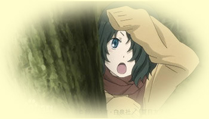
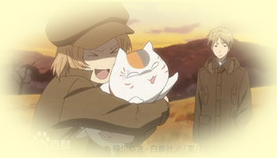
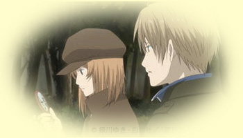
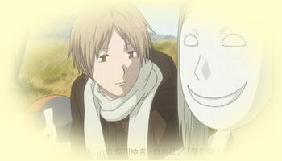
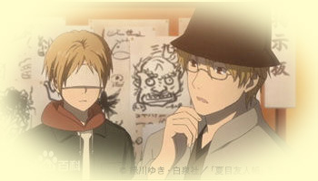
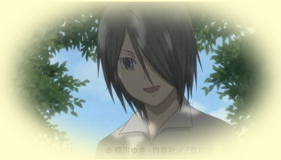

首 页
人物简介
第一季
第二季
第三季
第四季
第五季
OVA
喵咪老师
个人体会
夏目友人帐第二季
第一话 被夺走的友人帐
夏目贵志从小就看得见被称为妖怪的存在，因此周围的人对他敬而远之。他继承了外婆铃子的遗物”友人帐“，并且在保镖妖怪猫咪老师的陪伴之下，忙著将友人帐所写的妖怪名字还给拥有者，并且藉此逐渐认识铃子，也更加认识妖怪。某天，酷似猫咪老师的黑猫咪夺走了友人帐。为了拿回妖怪们最重要的名字，夏目拼命寻找黑猫的下落。得知黑猫正要参加妖怪的宴会，夏目不顾自己的危险，向猫咪老师表示要参加这场宴会。
第二话 融化於暖春
在积雪的某一天，夏目与猫咪老师来到了芝原野。据说这里曾经有两座森林守护神的石像，但如今只剩下一座了。就在这个时候，石像忽然出现一道黑影，想要占据夏目的身体，却不小心跑进夏目所做的雪兔里。这名妖怪叫做”玄“，他希望夏目协助他除掉从封魔之树解放出来的恶灵。
第三话 妖怪退治温泉行
名取周一与夏目一样看得见妖怪。他表面上是当红演员，背地里则是进行除妖的工作。这样的他邀请夏目一起去温泉旅馆，因此在猫咪老师的陪同之下，他们展开两天一夜的温泉之旅。虽然夏目充分享受著旅行的乐趣，不过周围开始发生令人在意的事情。壁橱里的声音，吊在天花板上的和服人影——名取这次是特地带夏目出来旅行，所以夏目决定不要影响他的兴致。
第四话 雏鸟孵化
有一颗蛋被遗留在藤原家的院子。没有母鸟照顾的这颗蛋，夏目与猫咪老师决定帮忙孵化。蛋一天一天成长，但是有一个妖怪奉主人之命，要夺走这颗蛋的生命。在夏目决定要保护这颗蛋的时候，终於从蛋里孵化的，居然是有著人类外型，名为”辰未“这种妖怪的雏鸟。

第五话 约定之树
一名个性怯懦的妖怪在远处眺望著夏目，并且只要视线与夏目相对就会逃走。询问原因之後，才知道他想拿回自己的名字。虽然友人帐有所反应，然而里头并没有这名妖怪的名字。名为”雾叶“的这名妖怪表示，铃子把他的名字绑在森林的树枝上，并且威胁他要经过五十年之後才能拿回名字。听过这段往事之後，夏目与雾叶来到了森林。夏目认为只要找到雾叶的名字，就可以知道铃子当年这麼做的用意了。

第六话 少女的阵法
夏目来到空地要接散步中的猫咪老师回家，并且看见一名专心在地上画图的少女。这名少女叫出夏目的名字之後就慌张离开，只留下一个陌生的魔法阵。隔天早上，一名留著泥鳅胡子的妖怪前来拜访夏目，希望他阻止那个画魔法阵的少女。与夏目就读同一间学校，自称是”多轨“的这名少女，知道夏目看得见妖怪之後，就表示希望夏目可以助她一臂之力。

第七话 不可呼唤
名为”多轨透“的少女所画的魔法阵，可以让普通人看见走进魔法阵的妖怪。某天，她偶然看见的妖怪对她施加诅咒，使得她无法过著一般人的生活。 为了解除这个诅咒，夏目、多轨与猫咪老师开始寻找妖怪，然而夏目却忽然被这名妖怪抓走。虽然好不容易逃了出来，夏目却暂时看不见妖怪了，使得寻找妖怪的任务变得困难至极。就在众人感到不安的这个时候，夏目的耳边响起一个诡异的声音。
第八话 不死的心愿
夏目与同学们来到某间民宿进行习题集训。与朋友们度过快乐时光的夏目，遇见一名想要抢夺友人帐的人鱼妖怪。依照民宿老板娘千津女士的说法，那是她小时候曾经遇见的人鱼。据说喝了就会长生不死的人鱼之血──千津曾经让重要的人喝下这样的血，如今则是感到後悔莫及，并且一直在寻找那个人。听完这段往事的夏目，则是再度去找那名曾经要抢友人帐的人鱼。

第九话 樱树树林里的他
自从得到一幅画之後，夏目的房间每天早上都会洒满花瓣。出现在夏目与猫咪老师面前的，是戴著诡异面具的妖怪”巳弥“。由著名妖怪画家所画的这幅画，里头有一个小小的人影，巳弥表示那个人是很久以前的朋友。虽然夏目想要把画还给巳弥，然而却发面这幅画却没办法从墙上取下来。
第十话 暂居的家
藤原家门口出现奇怪的脚印与涂鸦，这应该是妖怪留下的。就在出现不祥预感的这个时候，家里开始发生奇怪的事情。担心藤原夫妻出事的夏目，从滋的口中得知这个家曾经发生过类似的事情，後来是因为遇见了某人才平息的。夏目向滋询问那个人的来历，滋也因此开始述说童年时代发生的往事。

第十一话 咒术师的聚会
一名身负重伤的妖怪，像是要求救一样出现在夏目的面前。大概是感觉到夏目强大的妖力而来的吧。如此推断的名取，邀请夏目参加咒术师的聚会。 如果是拥有相同能力，曾经体验过相同痛苦的人们，或野以从他们身上找到自己能做的事情。如此心想的夏目，与猫咪老师一起参加聚会。
第十二话 废屋的少年
夏目来到一间每天晚上都会发出奇怪声音的宅邸。朝著传来挣扎声的方向走去，夏目在一个像是棺材的箱子里，发现一名背著书包的少年，这名少年则是在箱子打开之後就哭著跑走了。夏目拿著遗留下来的名牌寻找这名少年”介“，并且听到有妖怪在找这名少年的传闻。如果介看得见妖怪并且被妖怪盯上，夏目就想要保护这名少年。

第十三话 人与妖
正在找介的不只是妖怪，名取也在寻找介的下落。名取表示介其实是妖怪，而且他是要来除掉介的。夏目无法接受这个突如其来的事实，名取则是告诉夏目该决定所重视的是人类还是妖怪。夏目在寻找介的途中落入名取的陷阱，拯救夏目的则是介超乎常理的臂力。不只是要除掉自己，居然还伤害了夏目。对名取燃起怒火的介，终於展露出身为妖怪的力量。